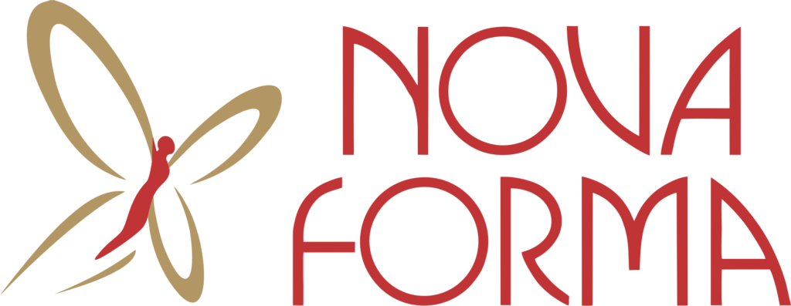
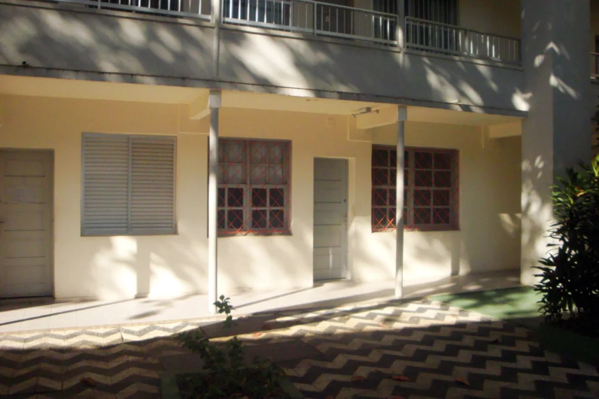
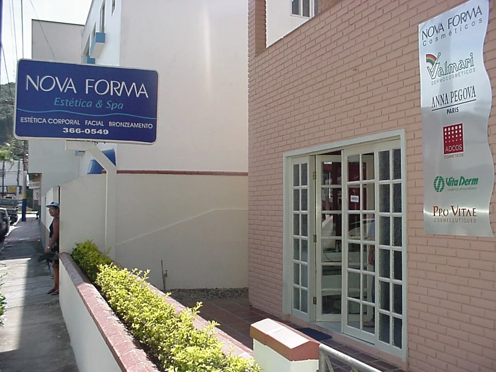
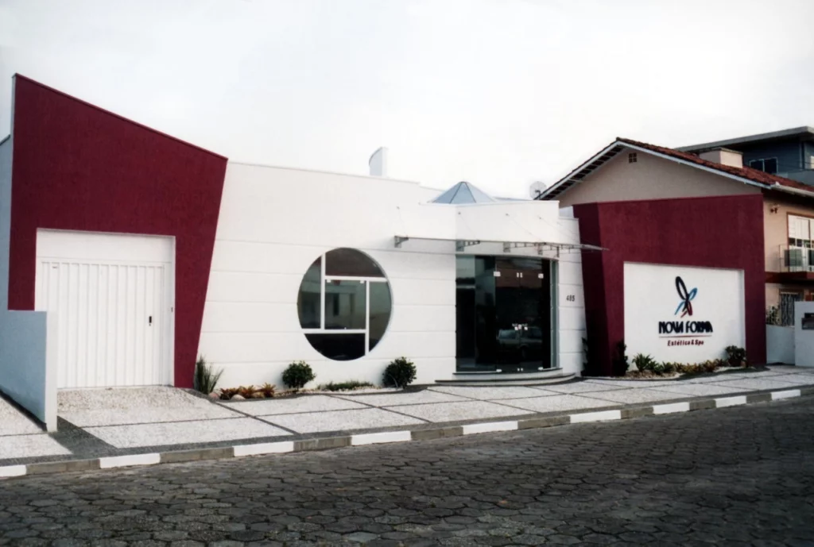
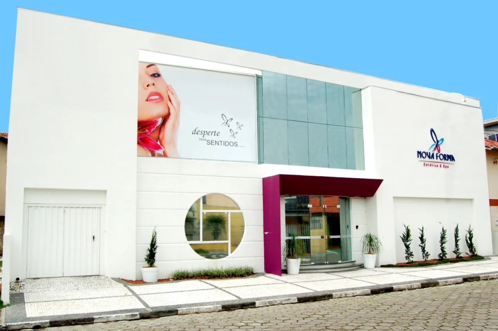
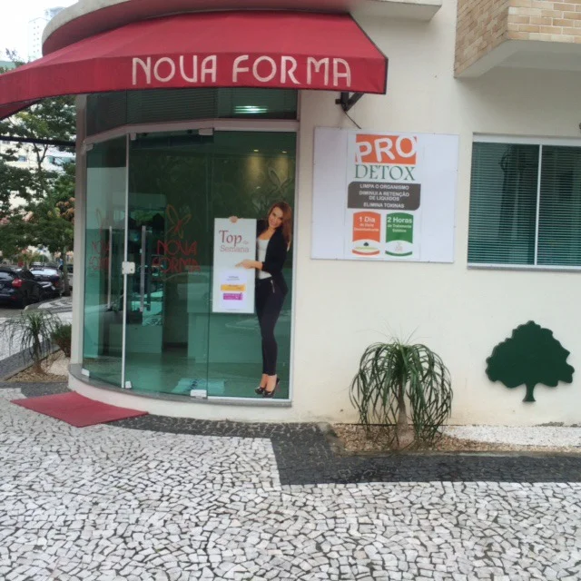
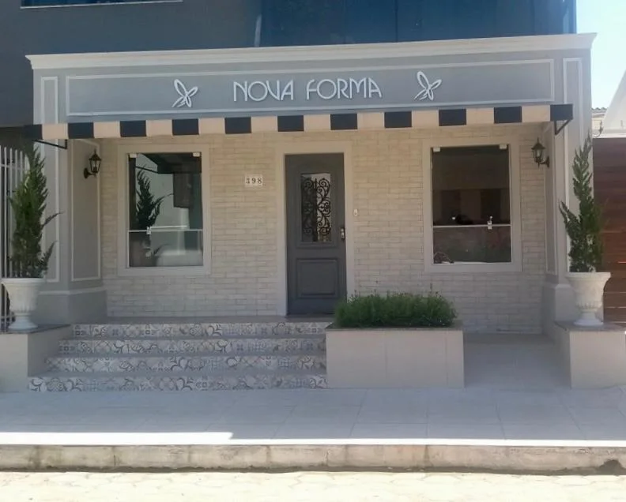

Onde tudocomeçou.
1994 · Acervo Nova Forma
No ano de 1994 iniciamos as nossas atividades em um espaço pequeno e simples na cidade de Balneário Camboriú/SC, onde fomos conquistando as nossas primeiras clientes, das quais muitas até hoje atendemos.

1994 · Acervo Nova Forma
No ano de 1994 iniciamos as nossas atividades em um espaço pequeno e simples na cidade de Balneário Camboriú/SC, onde fomos conquistando as nossas primeiras clientes, das quais muitas até hoje atendemos.
1996 · Acervo Nova Forma
No ano de 1996, com o crescimento da empresa, vimos a necessidade de ampliar o nosso espaço físico, aumentar a nossa equipe e as opções de tratamentos oferecidos.
2002 · Acervo Nova Forma
Em 2002 adquirimos a nossa sede própria, com um espaço ainda maior, uma equipe mais completa e um ambiente projetado e pensado para atender às necessidades de cada cliente de forma muito especial.
2009 · Acervo Nova Forma
No ano de 2009, com a grande demanda, vimos a necessidade de ampliar ainda mais as nossas instalações e, com isso, oferecer um espaço ainda maior e uma grande gama de serviços de estética, saúde e bem estar.
2014 · Acervo Nova Forma
No ano de 2014 realizamos uma reformulação no nosso formato de atendimento, visando uma relação ainda mais próxima e individual com cada cliente e desenvolvendo protocolos exclusivos de tratamentos.
2017 · Acervo Nova Forma
Em 2017, visando proporcionar às clientes um espaço mais moderno e mais adequado às necessidades atuais, entramos no nosso atual endereço, que conta com um espaço agradável, salas diferenciadas, diversos tratamentos exclusivos, equipamentos modernos e tecnologia de ponta.

1994 · ACERVO NOVA FORMA
No ano de 1994 iniciamos as nossas atividades em um espaço pequeno e simples na cidade de Balneário Camboriú/SC, onde fomos conquistando as nossas primeiras clientes, das quais muitas até hoje atendemos.

1996 · ACERVO NOVA FORMA
No ano de 1996, com o crescimento da empresa, vimos a necessidade de ampliar o nosso espaço físico, aumentar a nossa equipe e as opções de tratamentos oferecidos.

2002 · ACERVO NOVA FORMA
Em 2002 adquirimos a nossa sede própria, com um espaço ainda maior, uma equipe mais completa e um ambiente projetado e pensado para atender às necessidades de cada cliente de forma muito especial.

2009 · ACERVO NOVA FORMA
No ano de 2009, com a grande demanda, vimos a necessidade de ampliar ainda mais as nossas instalações e, com isso, oferecer um espaço ainda maior e uma grande gama de serviços de estética, saúde e bem estar.

2014 · ACERVO NOVA FORMA
No ano de 2014 realizamos uma reformulação no nosso formato de atendimento, visando uma relação ainda mais próxima e individual com cada cliente e desenvolvendo protocolos exclusivos de tratamentos.

2017 · ACERVO NOVA FORMA
Em 2017, visando proporcionar às clientes um espaço mais moderno e mais adequado às necessidades atuais, entramos no nosso atual endereço, que conta com um espaço agradável, salas diferenciadas, diversos tratamentos exclusivos, equipamentos modernos e tecnologia de ponta.